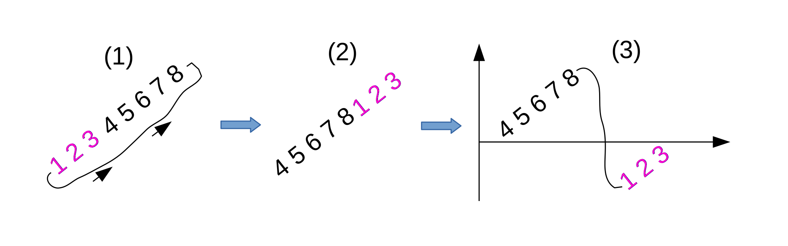
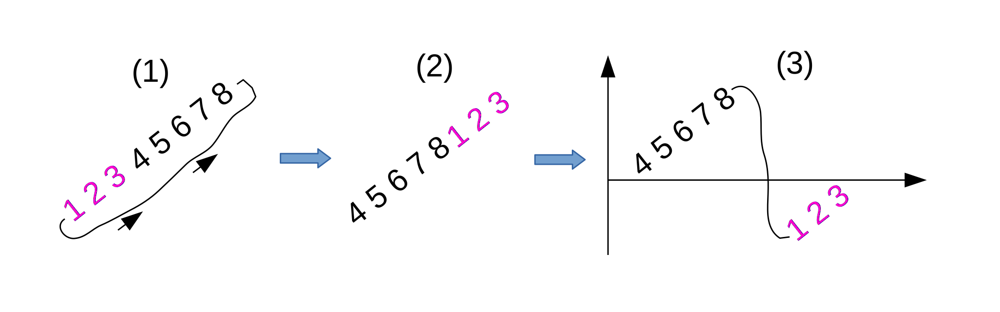

Given a rotated sorted array, find the index of maximum value of the array in $O(\log{n})$
For example, rotate the array $[1, 2, 3, 4, 5, 6, 7, 8]$ three elements to the left,
we have $[4, 5, 6, 7, 8, 1, 2, 3]$ 
After the rotation, there are two partial array:[4 5 6 7 8] and [1 2 3], We can visualize the array as [in figure (3)].
We try to use similar binary search algorithm which is as following
1. divide the array to two even parts,e.g. left and right
2. do a recursive call on one part of the array that contains the key
$\square$ Q. How do we know the maximum value is on the left or on right side?

1. find the middle element of the array [int mid = (lo + hi)/2]
2. compare arr[lo] and arr[mid]
if arr[lo] < arr[mid], we know the maximum value is between [mid] and [hi], [see figure (4)]
arr[lo] = 4 and arr[mid] = 7
Otherwise, the maximum value is in the range of [lo] and [mid], [see figure (5)]
arr[lo] = 6 and arr[mid] = 1
arr[] = {4, 5, 6, 7, 8, 1, 2, 3} lo = 0, hi = 7 mid = (lo + hi)/2 = 3; arr[lo] = 4, arr[mid] = 7; arr[lo] < arr[mid] The maximum value is from arr[mid] to arr[hi]
Note: If the array doesn't rotated, then $arr[lo] \lt arr[hi]$, otherwise $arr[lo] \geq arr[hi]$
we have $[4, 5, 6, 7, 8, 1, 2, 3]$ 
After the rotation, there are two partial array:[4 5 6 7 8] and [1 2 3], We can visualize the array as [in figure (3)].
We try to use similar binary search algorithm which is as following
1. divide the array to two even parts,e.g. left and right
2. do a recursive call on one part of the array that contains the key
$\square$ Q. How do we know the maximum value is on the left or on right side?
1. find the middle element of the array [int mid = (lo + hi)/2]
2. compare arr[lo] and arr[mid]
if arr[lo] < arr[mid], we know the maximum value is between [mid] and [hi], [see figure (4)]
arr[lo] = 4 and arr[mid] = 7
Otherwise, the maximum value is in the range of [lo] and [mid], [see figure (5)]
arr[lo] = 6 and arr[mid] = 1
arr[] = {4, 5, 6, 7, 8, 1, 2, 3} lo = 0, hi = 7 mid = (lo + hi)/2 = 3; arr[lo] = 4, arr[mid] = 7; arr[lo] < arr[mid] The maximum value is from arr[mid] to arr[hi]
// pseudocode
int findMaxIndex(int[] arr, int lo, int li) {
int mid = (lo + hi)/2;
if(arr[lo] < arr[mid])
return findMaxIndex(arr, mid, hi);
else
return findMaxIndex(arr, lo, mid);
}
There is one special case that we need to be considered
if the array does not rotated at all, then above code will fail.
for example, given [1, 2, 3, 4]
However, we can just compare the most left and most right elements in the arrayNote: If the array doesn't rotated, then $arr[lo] \lt arr[hi]$, otherwise $arr[lo] \geq arr[hi]$
if([lo] < [hi])
the array does not rotate at all,
the index of maximum value is [hi]
Better Code
/**
1. arr = {1},
2. 2 1
mid = arr[0]
3. 1 2
mid = arr[0]
2 3 4 1 (lo=0, hi=3)
mid = 1
(lo=1, hi =3) -> 3 4 1
mid = 2
(lo=2, hi=3) -> 4 1
mid = 2
arr[2] < arr[2]
max(arr, lo=2, hi=2) => 4
rotate sorted string
*/
public static int max(int[] arr, int lo, int hi){
if(arr[lo] <= arr[hi]){
return arr[hi];
}else{
int mid = (lo + hi)/2;
if(arr[lo] < arr[mid]){
return max(arr, mid, hi);
}else{
return max(arr, lo, mid);
}
}
}
Full implementation in Java
// Find the index of minimum element of an array
// Make sure to test the case [2, 1]
public static int findMinimumIndex(int[] arr, int lo, int hi){
if( arr[lo] <= arr[hi])
return arr[lo];
else{
// [2, 1]
// [3, 1, 2]
// =>[3, 1] => [1]
int mid = (lo + hi)/2;
if(arr[lo] < arr[mid])
return findMinimumIndex(arr, mid, hi);
else if(arr[lo] > arr[mid])
return findMinimumIndex(arr, lo, mid);
}
}
public static int findMaximumIndex(int[] arr, int lo, int hi){
if(arr[lo] <= arr[hi])
return arr[hi];
else{
// [2, 1]
int mid = (lo + hi)/2;
if( arr[lo] < arr[mid])
return findMaximumIndex(arr, mid, hi);
else if(arr[lo] > arr[mid])
return findMaximumIndex(arr, lo, mid);
}
}
Following up Question, find the index of the minimum element from above array
// make sure check the case [2 1]
int findIndexMinimum array lo hi
// no rotation
if(array[lo] <= array[hi])
return lo
else
mid = lo + hi/2
if array[lo] < array[mid]
findIndexMinimum array mid+1 hi // 2 1, 3 1 2
else
findIndexMinimum array lo mid